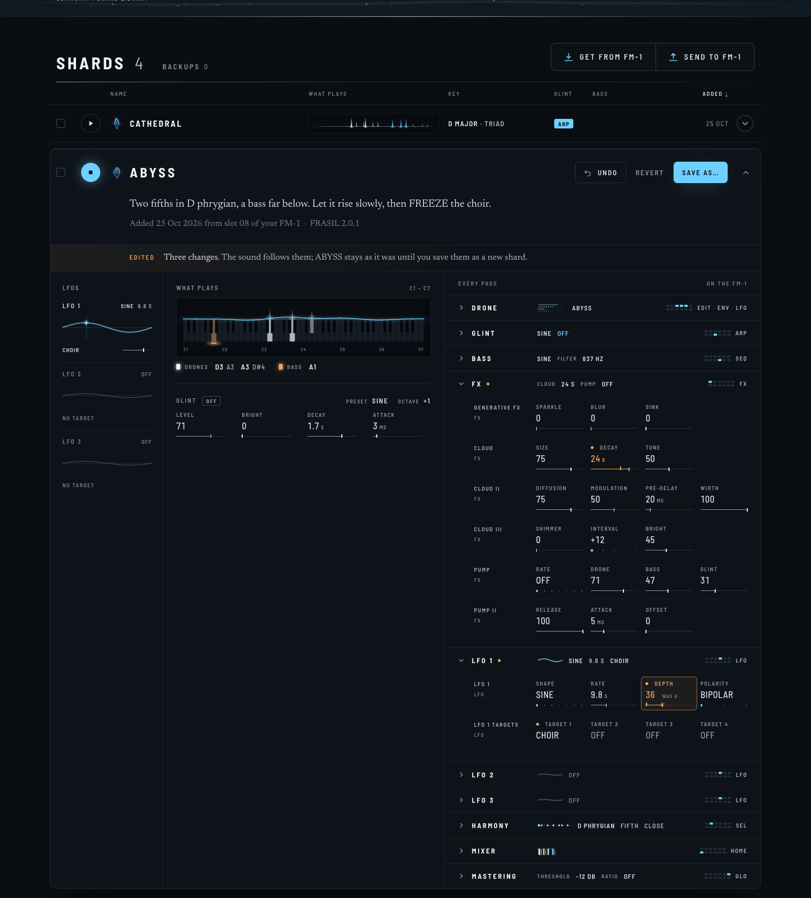
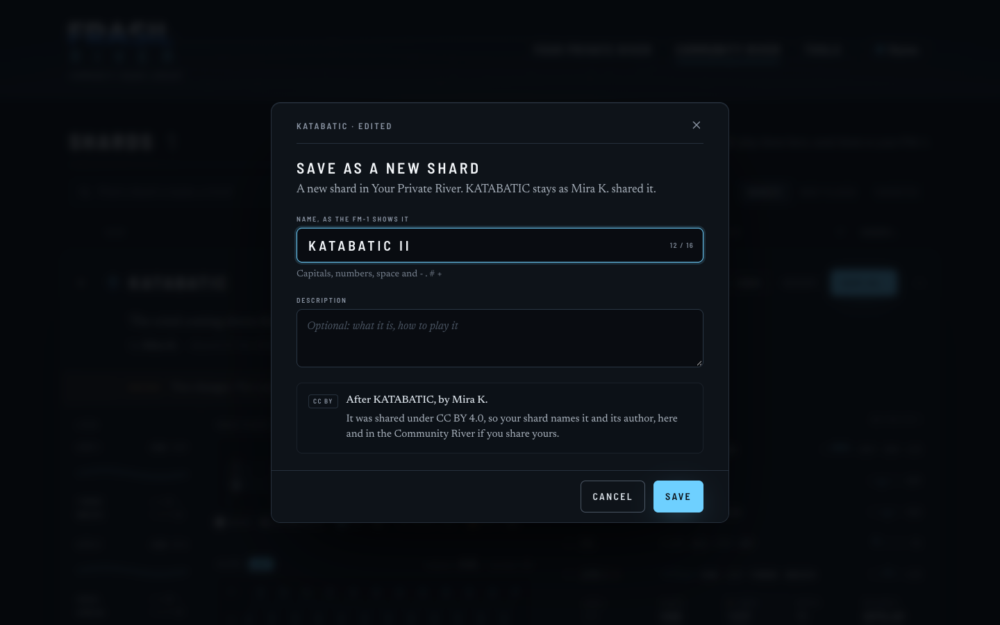

An opened card is also an editor. Every setting turns as on the FM-1: drag it left or right (or the
arrow keys), and a choice opens its list. The sound follows at once, and nothing changes in the shard until you save
it as a new one. Each change goes through FRASIL's own engine, as a MIDI CC learned on that setting would, so a
preset's sound or CUSTOM after a drone's setting is turned behave exactly as on the device. These pictures were
made that way: ABYSS here really plays its edited sound, and its LFO 1, woken up, moves the choir.
EDITING YOUR OWN SHARD

30Three changes on ABYSS, playing: LFO 1's DEPTH
(turned now, a lamp frame, where it was beside it), its TARGET 1 on the CHOIR, the cloud's DECAY. A changed setting is
lamp, a dot before its name, a slate tick on its gauge where it was; a section holding one has a dot too. One line
under the description says so. The head's actions become the editor's: UNDO, REVERT, SAVE AS.
31A TARGET's list: OFF, then the forty targets
by track, each in its colour.32A choice (SCALE) opens its list; it can
also be dragged or stepped with the arrows, as a knob.
33SAVE AS: a new shard in Your Private
River, its name as the FM-1 shows it (16 characters), its description (yours, to change). ABYSS stays as it
is.
SOMEONE ELSE'S SHARD
34KATABATIC, Mira's, in the Community
River: the same editor, on any shard you can open.

35Saved from someone else's: it names
them (CC BY 4.0), with the service's own credit (the origin it already keeps for copies).36Signed out: edit and listen
freely; to save, sign in. The changes wait on the page.
37Afterwards, in Your Private River:
KATABATIC II, Mira credited where SHARED would be; ABYSS, closed with changes not saved, says so under its
name.
A PHONE
38The same gesture: drag across a setting (a
vertical drag still scrolls).
TO DECIDE
Editing straight away, with no edit mode: every opened card turns, nothing is saved until you choose to.
On your own shards, also SAVE (replace it; asked first when it is shared, since others favorited it), beside
SAVE AS? On others', SAVE AS only.
Today's Edit button (name and description) becomes RENAME, so that "edit" means the sound.
Later, not in this step: what plays (the latched notes, the arpeggio, both sequences) and the shard's TEMPO.